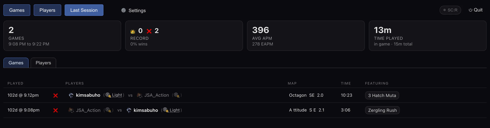
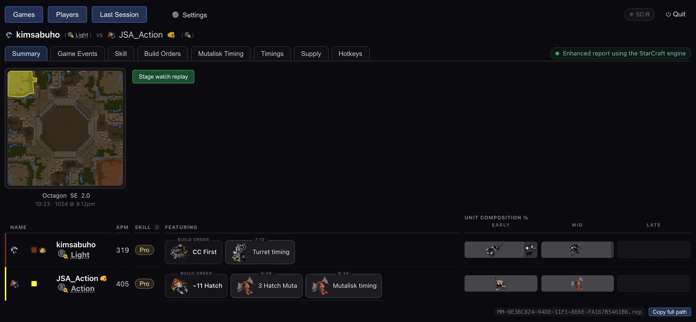
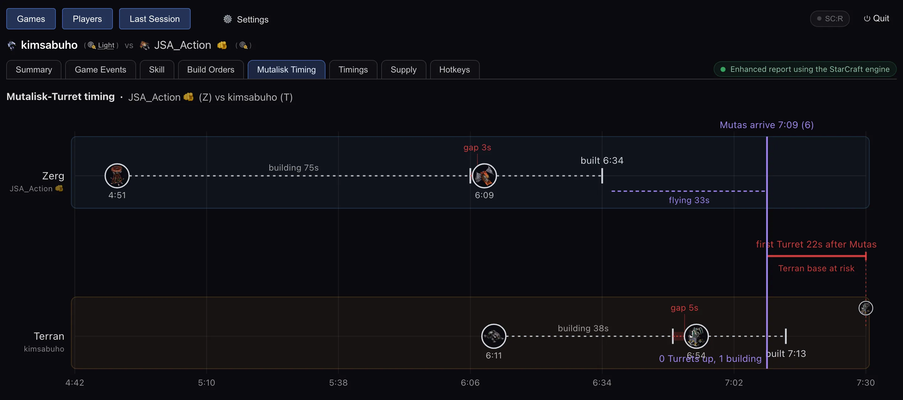
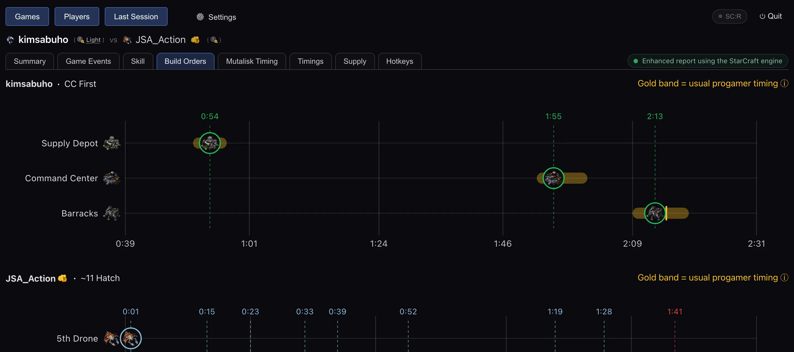
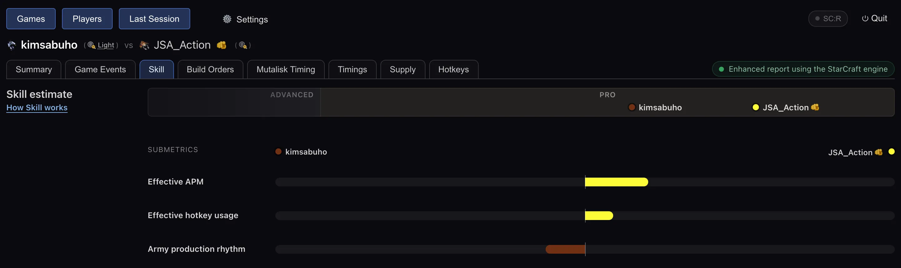
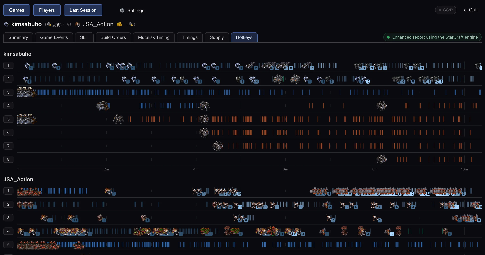
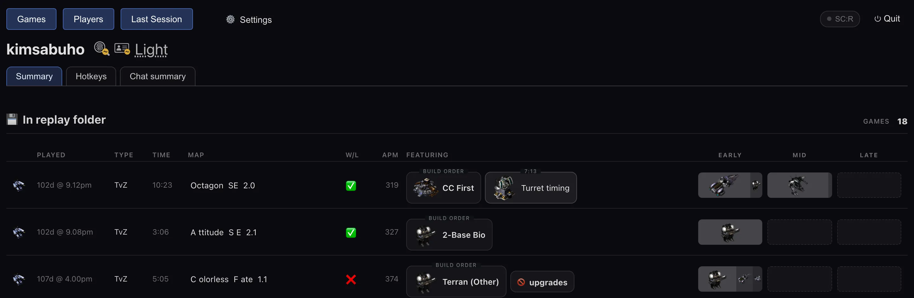

How it works
Follow one game
Say you are Action, the Zerg progamer, and tonight's session is not going well. Between games, you alt-tab to screpdb.
-
Last session
Two games, two losses
The session is already there, updated as each game ends: the record, the games and who you played. Both losses were to the same account. The last one was a ZvT on Octagon.

-
Summary
One look at the game
Both openers and what stood out. Your Mutalisks were out at 6:34. Did they do any damage?

-
Mutalisk timing
The Mutas got there first
Six Mutalisks reach the Terran base at 7:09, and the first turret finishes 22 seconds later. The window was there.

-
Game events
Where it ended
At 10:01 the Terran army walks into your natural. screpdb ran the game through the StarCraft engine, so every unit in that push lights up on the map.
-
Build orders
Was the opening on time?
CC First against your ~11 Hatch, each charted against the timings progamers usually hit.

-
Skill
Who played better?
Both of you rate as Pro. Metric by metric, you can see where each player was sharper.

-
Hotkeys
What was on every key
Not just when each hotkey was pressed, but which units were on it at the time, for both players, all game long.

-
Players
And who was kimsabuho?
Two losses to the same account. screpdb recognises it as Light's.

-